头发
日漫双马尾女生：大眼、团子辫和系带短装
窗口标题是 VRoid Studio 1.11.1，面板是英文。头发分组后半改成韩文名，衣服底图图层写成日文「デフォルト画像」。下面按画面出现的顺序记，数值只写这一帧能读出来的。
对着参考收眼型
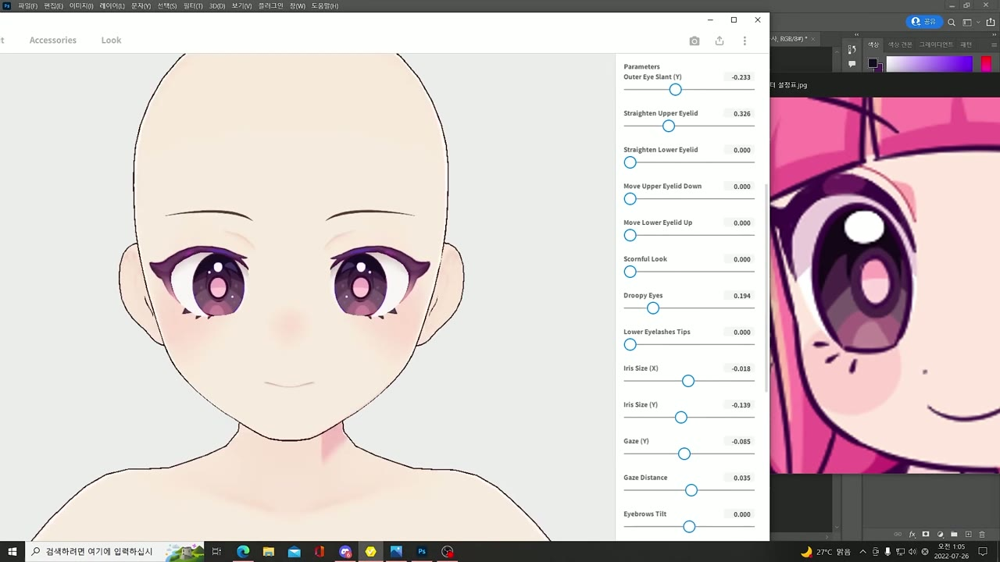
模型还是光头。右侧参考是一只又大又圆的粉发眼睛。这一帧外侧眼角 Outer Eye Slant (Y) 是 -0.233，拉直上眼睑 Straighten Upper Eyelid 是 0.326，下垂感 Droopy Eyes 是 0.194，虹膜 Iris Size (X) -0.018、(Y) -0.139，视线 Gaze (Y) -0.085、Gaze Distance 0.035。下眼睑、上下眼睑位移、Scornful Look 和眉毛倾斜都停在 0。滑杆前后还在翻，这些是这一屏的读数，不是锁死的最终值。脸颊上已经有一层淡腮红。
手绘中分刘海
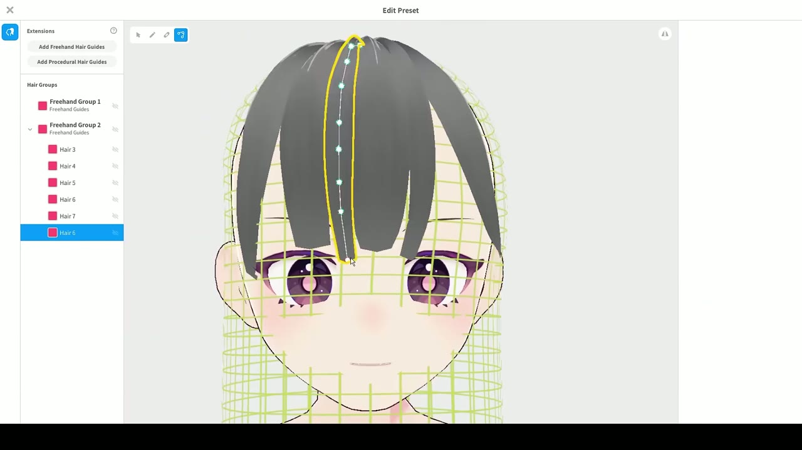
用 Add Freehand Hair Guides 在刘海正中拉一条线，点从发旋排到眉心，左右刘海盖住额头，发色还是默认深灰。分组名这时还是 Freehand Group 1 和 2，里面是 Hair 3 到 Hair 7。
把刘海涂成粉色
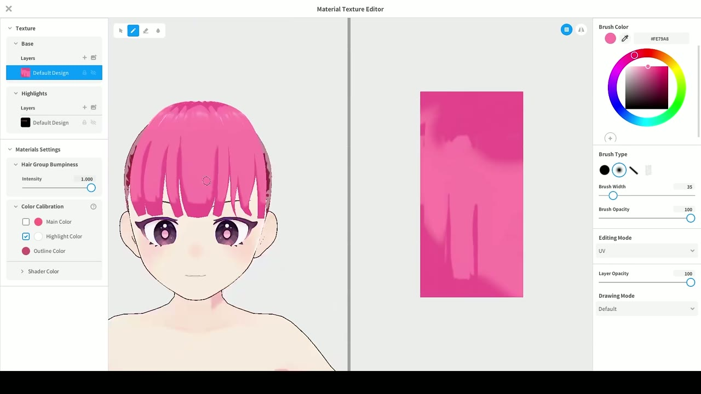
在底色上竖着涂一块粉，刘海从灰变成粉。这一帧笔宽 35、不透明度 100，编辑模式是 UV。高光色开着，主色关着，发组凹凸拉到最右。
一节节拼团子辫
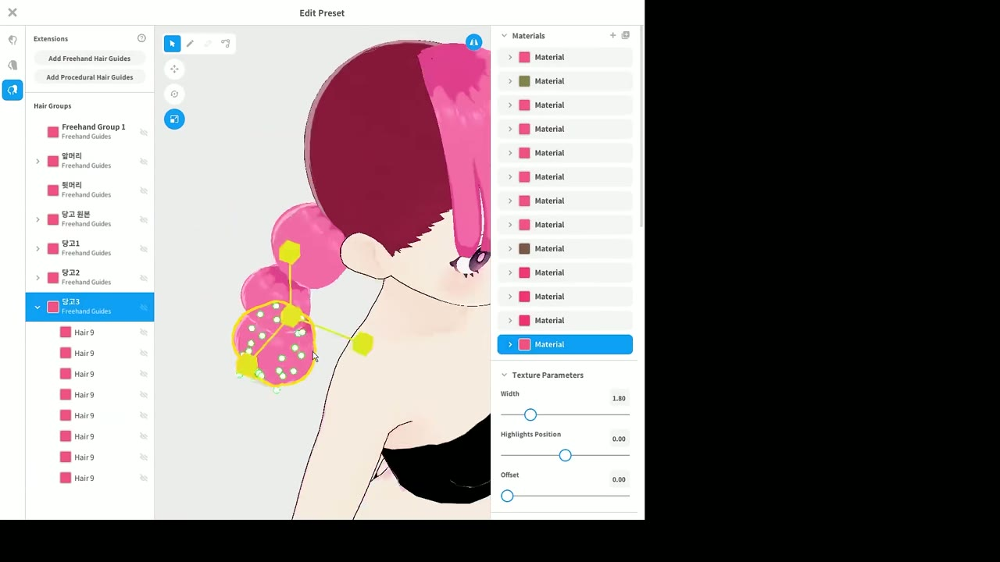
分组改成韩文：앞머리 是刘海，뒷머리 是后发，당고 원본 和 당고1、당고2、당고3 是团子。每一节都是一组 Freehand Guides，外圈有控制点，用移动轴把圆发贴到头侧和上一节上。这一帧纹理 Width 是 1.80，Highlights Position 和 Offset 都是 0.00，这三个复选框没勾。后发这一侧还是深红，刘海已经是亮粉，材质列表里两种颜色分开。
后发下缘留一块头皮
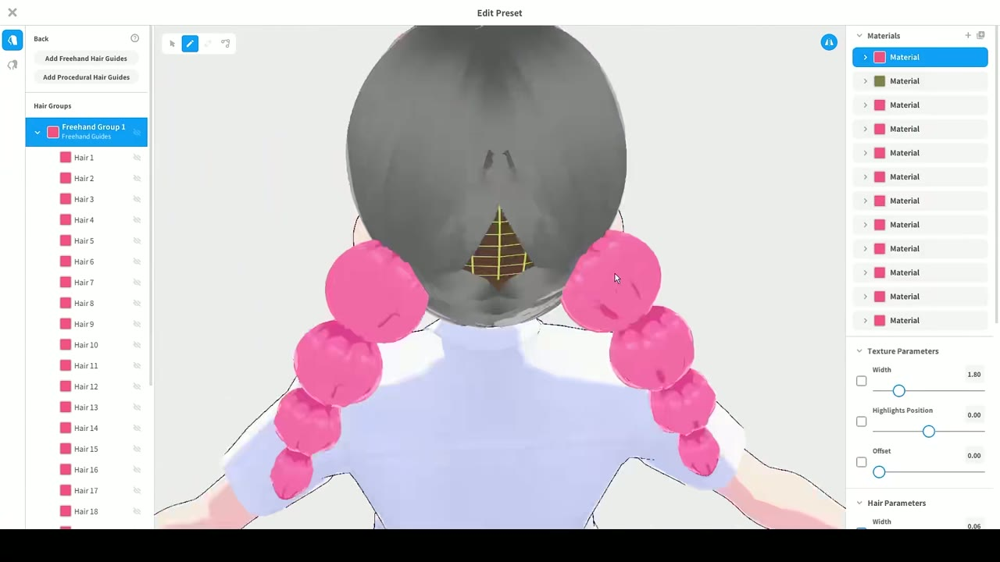
后发铺成一整片深灰，下缘收到后颈，只留一小块头皮，两串团子从左右接出来。纹理 Width 仍是 1.80，高光位置和 Offset 在 0，复选框没勾。身上这时是浅色上衣，还不是后面的短装。
停一下脸型
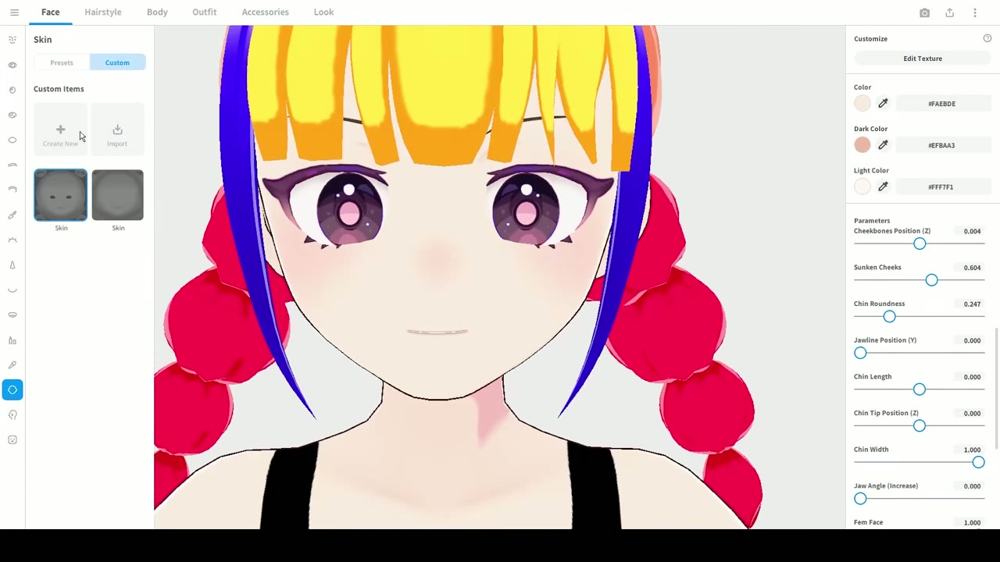
皮肤自定义这一帧能读到 Color #FAEBDE、Dark Color #EFBAA3、Light Color #FFF7F1。颧骨 Cheekbones Position (Z) 0.004，几乎在中间；Sunken Cheeks 0.604；Chin Roundness 0.247；Chin Width 和 Fem Face 都在最右，读数 1.000。下颌位置、下巴长短、下巴尖、Jaw Angle 都是 0.000。头发这时是黄刘海、蓝侧发、红团子，和前后的全粉不是同一状态，画面没有显示是在这里把颜色改回去的。
修眼白
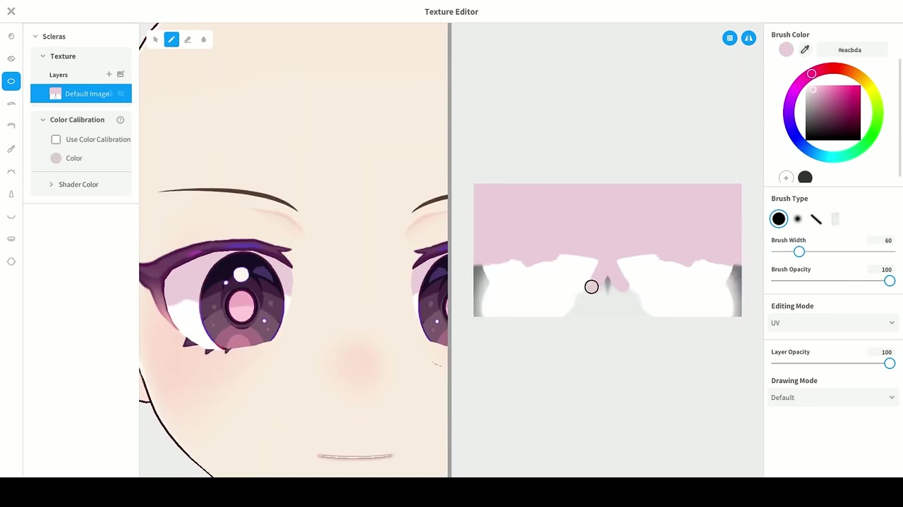
眼白下缘被涂成白，眼珠下面更干净，上半还是浅粉底。笔宽 60，不透明度 100。在这之前，Eye Highlights 里已经在透明图层上点过两小块灰高光。紧接着眉毛 Eyebrows 用很细的笔，在 World 模式画了一道眉。
鼻翼加一圈浅粉
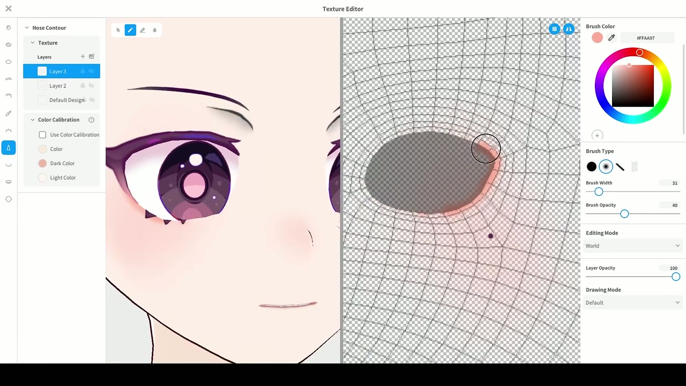
笔在鼻孔周围扫一圈浅粉，正面看鼻翼和眼下更软。腮红比这更早，改刘海之前脸颊上就有，这里没有再开一张皮肤大图层来重画。
加粗上眼线
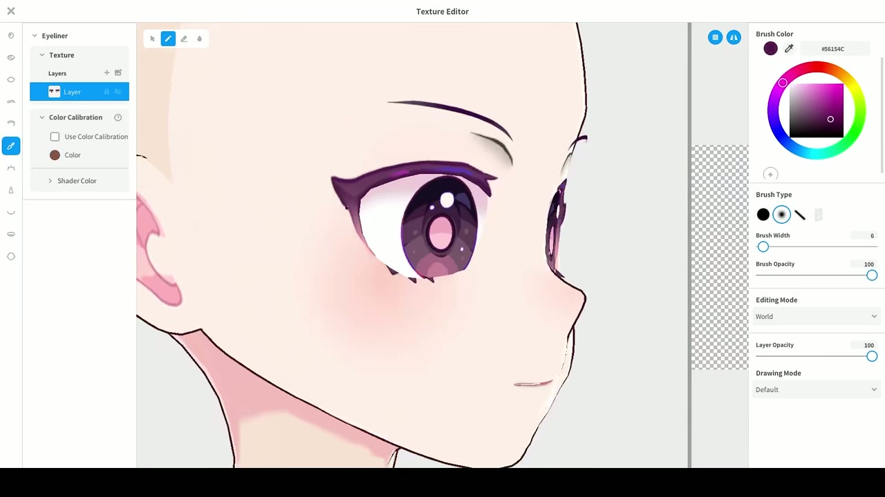
眼线画在上眼睑外缘，颜色偏紫，笔很细。下眼睑没有同样的一条粗线。侧面也能看到脸颊那层淡粉。
刘海之间加暗缝
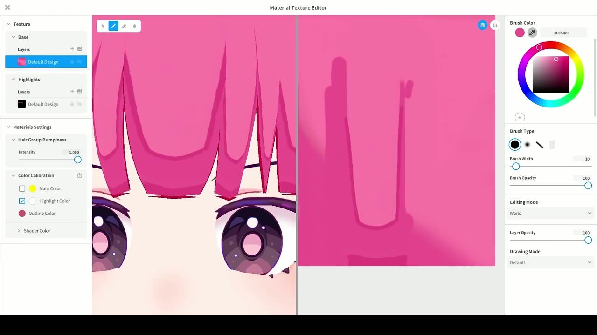
在粉底上竖着拉几道更深的粉，刘海之间就分出缝。Hair Group Bumpiness 仍是 1.000，主色没勾。暗缝之后，刘海引导参数里能看到 Cross Section 选了 Diamond，Fit to Head (Z) 在最右，刘海贴着额头。
给团子辫生成骨骼
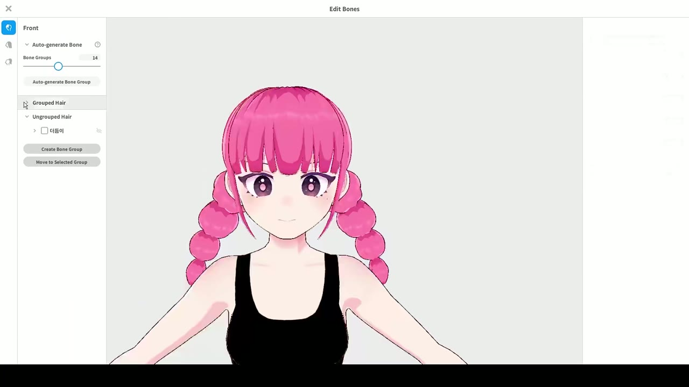
刘海和团子这时已经统一成粉，身上还是黑色背心。这里给头发自动生成骨骼，未分组里留着名叫 더듬이 的发。下一秒在编辑预设里，这条发被拉成后背一条细束，用移动轴摆位置。
袖口画交叉粉绳
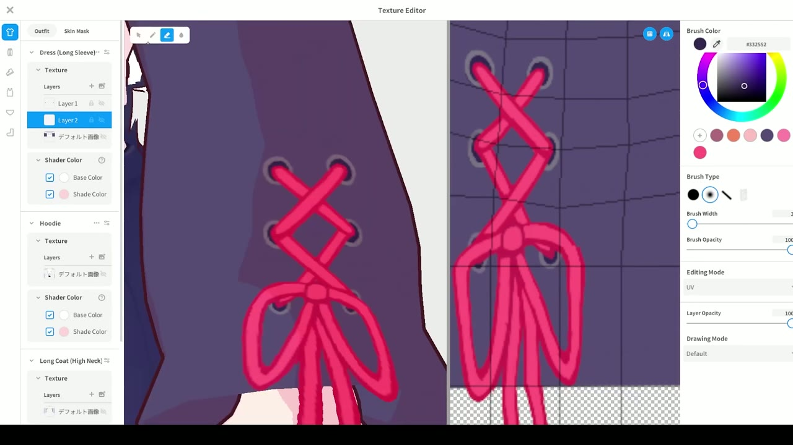
衣服列表里同时有 Dress (Long Sleeve)、Hoodie 和 Long Coat (High Neck)，底图图层名是「デフォルト画像」。这一帧选中 Dress 的 Layer 2，笔色偏深，袖口上已经能看到交叉的粉绳，末端收成结。粉绳本身更像画在下面的 Layer 1。进衣服之前，Skin Overlay 还在袜筒上点过一个小粉心，完成全身时不一定对着镜头。
背后的白带上描叉
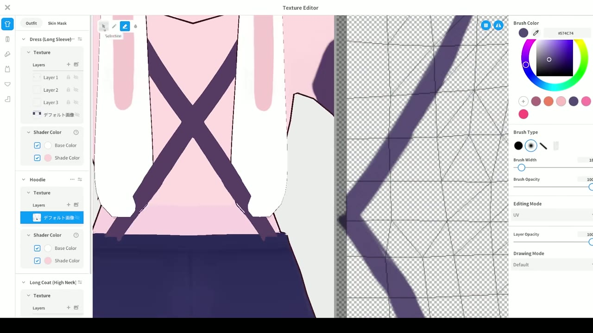
交叉绳画在连帽衫这层，不是刚才的 Dress。白带交叉的位置用深灰紫描成 X，右侧 UV 上是同一笔的斜线。胸前成品也是白底上两道同样的叉，袖口留着粉绳。
收一下下摆和腰
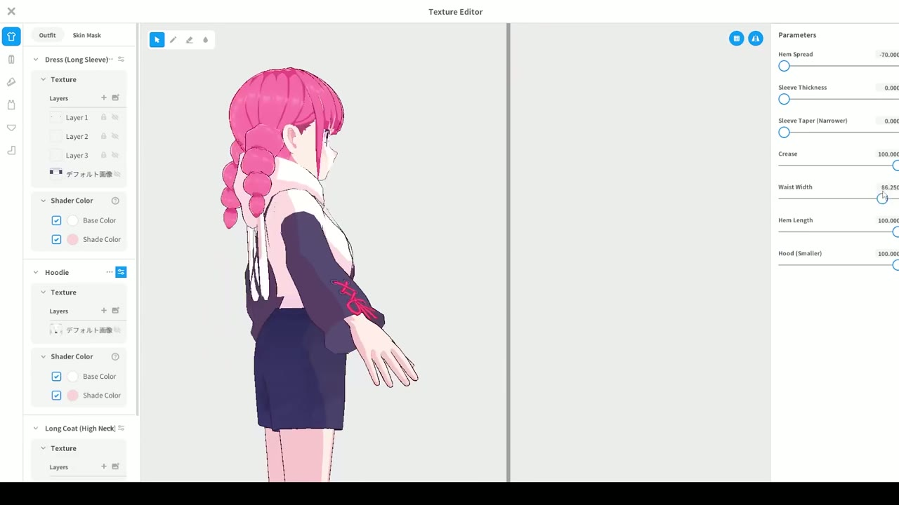
侧面对着版型。这一帧 Hem Spread 在最左，读数 -70.000；Sleeve Thickness 和 Sleeve Taper (Narrower) 在中间，都是 0.000；光标停在 Waist Width，读数 86.250；Crease、Hem Length、Hood (Smaller) 都在最右，读数 100.000。袖口粉绳和下摆长度在侧面能直接看到。
头尖收到底，锁骨抹平
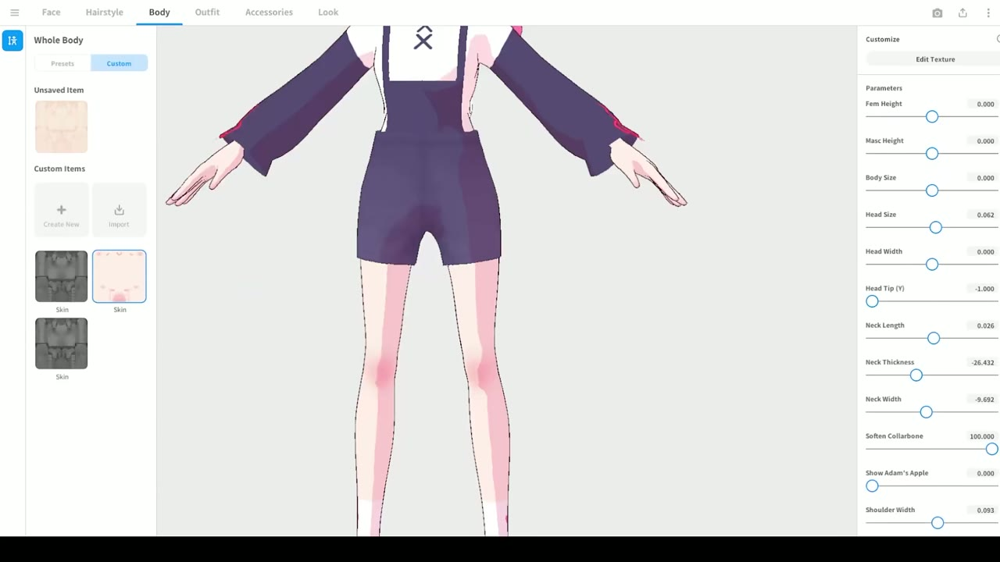
体型页停得很短。这一帧 Fem Height、Masc Height、Body Size 都是 0.000；Head Size 0.062，Head Width 0.000；Head Tip (Y) 拉到最左，读数 -1.000；Neck Length 0.026，Neck Thickness -26.432，Neck Width -9.692，圆点都在中线左边；Soften Collarbone 在最右，100.000；Show Adam's Apple 是 0.000，Shoulder Width 0.093。画面上脖子偏细，锁骨被抹平。膝盖的粉是更早在皮肤纹理里涂的，关纹理时弹出过 Whole Body 的保存框。
摆一个完成姿势
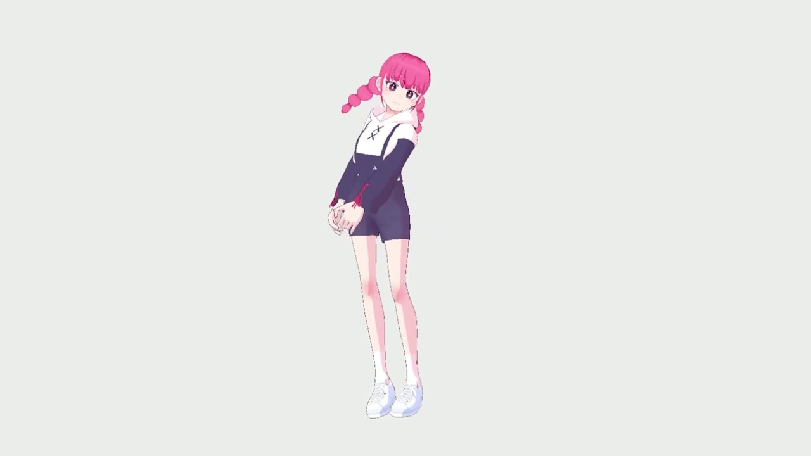
摆姿势之前，表情编辑器里切过 Smiling 和 Closed。闭眼那一帧 Eyes 的 Closed 在最右，眼睛是闭上的。最后这一帧是侧身站着：齐刘海、双团子辫、白底交叉绳短装、深色短裤、白袜和白鞋。